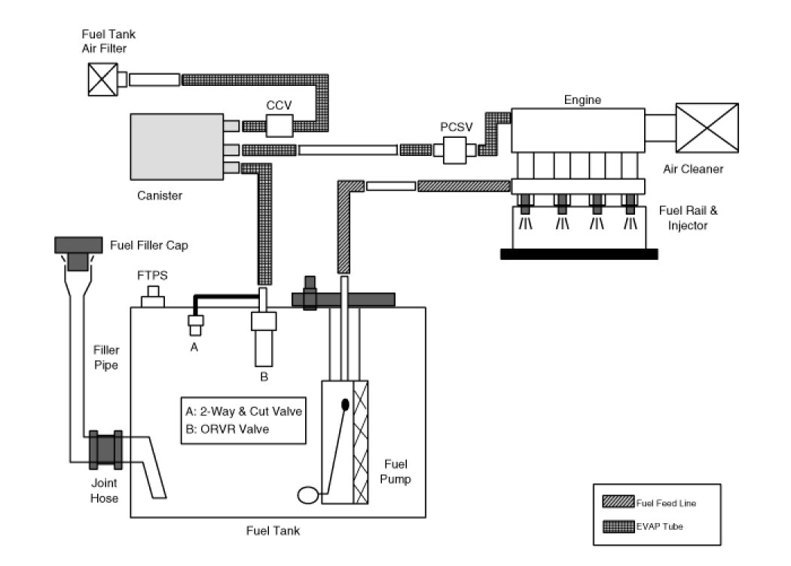
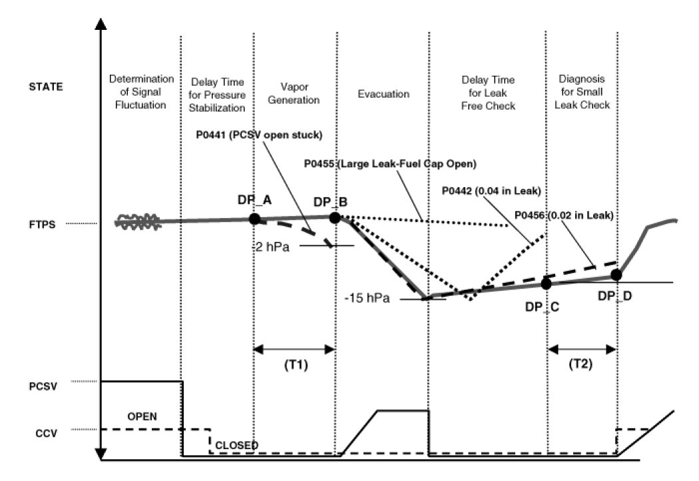
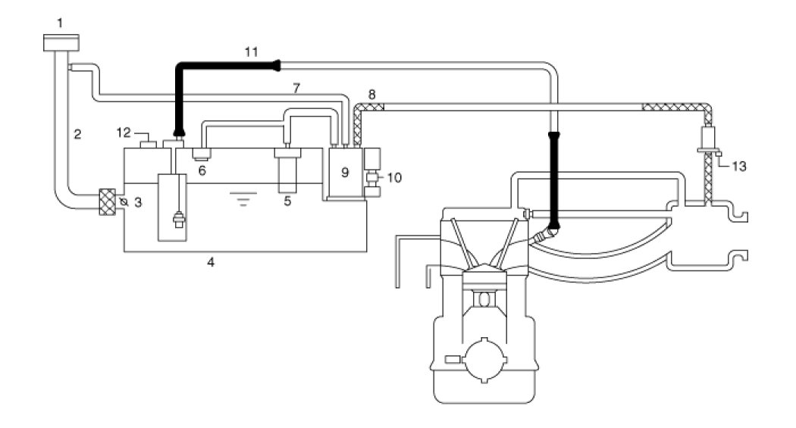
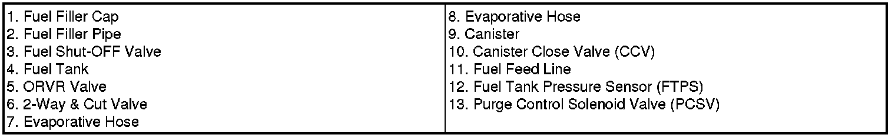

Schematic Diagrams And Component Descriptions
Schematic Diagram
Schematic Diagram:

Canister
The Canister is filled with charcoal and absorbs evaporated fuel vapor from the fuel tank. The gathered fuel vapor in canister is drawn into the intake manifold by the ECM/PCM when appropriate conditions are set.
Purge Control Solenoid Valve (PCSV)
The Purge Control Solenoid Valve (PCSV) is installed in the passage connecting the canister to the intake manifold. It is a duty type solenoid valve and is operated by ECM/PCM signal.
To draw the absorbed vapor into the intake manifold, the ECM/PCM will open the PCSV, otherwise the passage remains closed.
Fuel Filler Cap
A ratchet tightening device in the threaded fuel filler cap reduces the chances of incorrect installation, when sealing the fuel filler. After the gasket on the fuel filler cap and the fill neck flange make contact, the ratchet produces a loud clicking noise indicating the seal has been set.
Fuel Tank Pressure Sensor (FTPS)
The Fuel Tank Pressure Sensor (FTPS) is an integral part of the monitoring system. The FTPS checks Purge Control Solenoid Valve (PCSV) operation and leaks in the Evaporative Emission Control System by monitoring pressure and vacuum level in the fuel tank during PCSV operating cycles.
Canister Close Valve (CCV)
The Canister Close Valve (CCV) is located between the canister and the fuel tank air filter. It closes off the air inlet to the canister for the Evaporative Emissions System and also prevents fuel vapors from escaping from the Canister when the vehicle is not operating.
Evaporative System Monitoring
The Evaporative Emission Control Monitoring System monitors fuel vapor generation, evacuation, and a leakage check step. At first, the OBD-II system checks if vapor generation due to fuel temperature is small enough to start monitoring. Then it evacuates the evaporative system by means of PCSV with ramp in order to maintain a certain vacuum level. The final step is to check if there is vacuum loss by any leakage of the system.
Vapor Generation Checking
During the stabilization period, the PCSV and the CCV are closed. The system pressure is measured as starting pressure (DP_A). After a certain defined period (T1), the system pressure (DP_B) is measured again and the difference from the starting pressure is calculated. If this difference (DP_B - DP_A) is bigger than the threshold, there should be excessive vapor pressure and the monitor is aborted for next check. On the contrary, if the difference is lower than the negative threshold, the PCSV is regarded as having a malfunction such as clogged at open position.
Large EVAP Leak Detection
The PCSV is opened with a certain ramp for the pressure to reach down to a certain level. If the pressure can't be lowered below a threshold, the system is regarded as having a fuel cap-open or having a large leak.
Leaking Checking
The PCSV is closed and the system waits for a period to get stabilized pressure. During checking period (T2), the system measures the beginning and the end of the system pressure (DP_C, DP_D). The diagnosis value is the pressure difference corrected by the natural vapor generation (DP_B - DP_A) rate from the vapor generation check step.
Evaporative System Monitoring

Evaporative And ORVR Emission Control System
This system consists of a fill vent valve, fuel shut-off valve, fuel cut valve (for roll over), two way valve (pressure/vacuum relief), fuel liquid/vapor separator which is installed beside the filler pipe, charcoal canister which is mounted under the rear floor LH side member and protector, tubes and miscellaneous connections.
While refueling, ambient air is drawn into the filler pipe so as not to emit fuel vapors in the air. The fuel vapor in the tank is then forced to flow into the canister via the fill vent valve. The fuel liquid/vapor separator isolates liquid fuel and passes the pure vapor to the charcoal canister.
While the engine is operating, the trapped vapor in the canister is drawn into the intake manifold and then into the engine combustion chamber. Using this purge process, the charcoal canister is purged and recovers its absorbing capability.

